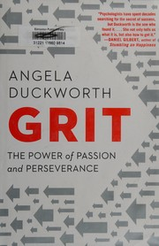
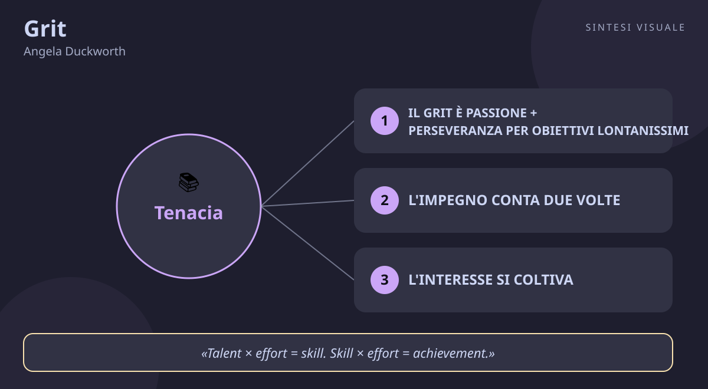

Grit
Angela Duckworth · Successo e perseveranza
«Grit»
- Passione e perseveranza
- Impegno conta due volte
- Pratica deliberata
- Mentalita di crescita
🧭Introduzione
Angela Duckworth non è nata come psicologa: dopo gli studi ha fatto la consulente aziendale, poi — quasi per caso — l'insegnante di matematica alle medie in una scuola pubblica di New York. Lì notò qualcosa che la tormentava: non erano i ragazzi con il QI più alto a ottenere i risultati migliori, ma quelli che non mollavano mai. Quella domanda — cosa fa davvero la differenza tra chi riesce e chi no? — la portò a lasciare tutto, a prendere un dottorato in psicologia all'Università della Pennsylvania e a studiare per anni cadetti di West Point, venditori, atleti e studenti. Nel 2013 la sua TED Talk sul tema diventò virale, nel 2013 vinse la borsa MacArthur (il cosiddetto "premio genio") e nel 2016 uscì questo libro, rimasto per mesi in vetta alla classifica del New York Times.
Perché conta oggi: viviamo nell'epoca del talento celebrato — i "nati per" questo o quello, i bambini prodigio, il mito del colpo di genio. Duckworth smonta il mito con i dati: il talento conta, ma è l'impegno prolungato a decidere chi arriva in fondo. In un mondo di distrazioni e scorciatoie, è il manuale scientifico della tenacia.
A chi è utile: a chi inizia mille cose e non ne finisce una, a genitori e insegnanti che vogliono educare alla perseveranza, a chi fa sport, studia o costruisce un'attività e si chiede perché — a parità di talento — alcuni avanzano e altri si fermano.
📘Riassunto
La scintilla centrale: il successo non si spiega con il talento né con il QI, ma con il grit — passione e perseveranza applicate a obiettivi di lunghissimo periodo, giorno dopo giorno, per anni.
La struttura logica procede in tre parti:
- Cos'è il grit — la scoperta: studiando i cadetti di West Point (il temutissimo primo anno, il "Beast Barracks"), i finalisti delle gare di spelling e i venditori, Duckworth trova che un solo tratto predice chi resiste: non il talento, non l'intelligenza, non l'aspetto fisico, ma il grit. E il meccanismo è matematico: Talento × impegno = abilità; Abilità × impegno = risultato. L'impegno, cioè, conta due volte.
- Come si coltiva dall'interno — quattro risorse psicologiche, in ordine: l'interesse (la passione non si trova, si sviluppa curiosando e approfondendo), la pratica deliberata (allenarsi ogni giorno appena oltre i propri limiti, con obiettivi microscopici e feedback immediato), lo scopo (collegare il proprio lavoro a qualcosa più grande di sé) e la speranza (la convinzione, legata alla mentalità di crescita di Carol Dweck, che il proprio impegno possa cambiare il futuro).
- Come si coltiva dall'esterno — genitori, allenatori, insegnanti e culture di gruppo possono allenare il grit: con standard altissimi uniti a sostegno incondizionato, con attività extrascolastiche portate avanti per anni, e con comunità dove "qui non si molla" è la norma.
Il punto di svolta: il capitolo "L'impegno conta due volte". Da lì il lettore smette di chiedersi "ho abbastanza talento?" e inizia a chiedersi "sto mettendo abbastanza impegno, e da abbastanza tempo?" — non è chi parte più forte ad arrivare, è chi non smette di camminare.
L'eredità oggi: il libro ha portato il concetto di grit nelle scuole, nelle aziende e nello sport di tutto il mondo; ha acceso un dibattito scientifico vivace (quanto conta davvero il grit rispetto al talento?) ma ha reso popolare un'idea liberatoria: la tenacia si può imparare a qualunque età.
💡Concetti chiave
- Il grit è passione + perseveranza per obiettivi lontanissimi: non basta impegnarsi tanto, serve impegnarsi a lungo nella stessa direzione.
- L'impegno conta due volte: prima trasforma il talento in abilità, poi trasforma l'abilità in risultato.
- L'interesse si coltiva, non si scopre: la passione nasce curiosando, giocando e approfondendo — non aspettando la folgorazione.
- La pratica deliberata batte le ore di esercizio: conta allenarsi ai limiti delle proprie capacità, con micro-obiettivi e feedback, non ripetere ciò che si sa già fare.
- Lo scopo tiene in piedi la fatica: chi collega il proprio lavoro a un bene più grande resiste molto più a lungo.
- La speranza si allena con la mentalità di crescita: credere che l'impegno cambi il futuro è ciò che permette di rialzarsi dopo ogni caduta.
📖1. Il grit è passione + perseveranza per obiettivi lontanissimi
- Definizione il grit ha due gambe: la passione (restare fedeli per anni allo stesso obiettivo di fondo, la "stella polare") e la perseveranza (lavorare sodo ogni giorno nonostante noia, ostacoli e sconfitte). Senza la prima si salta da una cosa all'altra; senza la seconda si sogna senza agire.
- Esempio due persone vogliono imparare l'inglese: una cambia metodo ogni mese (app, corso, serie TV, poi molla), l'altra fa 20 minuti al giorno con lo stesso metodo per due anni. La seconda arriva al livello B2, la prima è ancora all'inizio — a parità di talento iniziale.
- Come applicarlo (a) scrivi il tuo obiettivo di fondo in una frase ("diventare un bravo falegname", "parlare bene l'inglese"); (b) chiediti ogni mese "sto ancora andando lì, o ho cambiato strada senza accorgermene?"; (c) misura la fedeltà alla direzione, non solo le ore di lavoro.
- Errore comune confondere l'intensità con il grit — fare una settimana eroica e poi sparire per un mese non è grinta, è entusiasmo; oppure restare testardi su una strada palesemente sbagliata solo "per non mollare" (il grit è fedeltà allo scopo, non a ogni singolo mezzo).
- Collegamento la regola di Warren Buffett citata nel libro — per eccellere servono anni sulla stessa strada; e il "capitale di carriera" di Cal Newport (So Good They Can't Ignore You): le competenze rare si costruiscono solo restando a lungo nello stesso campo.
📖2. L'impegno conta due volte
- Definizione le due formule del libro — Talento × impegno = abilità; Abilità × impegno = risultato. L'impegno entra due volte nel conto: prima quando trasforma il talento grezzo in capacità reale, poi quando trasforma la capacità in risultati concreti. A parità di talento, chi si impegna di più vince due volte, non una.
- Esempio due commercialisti con lo stesso talento: uno studia le norme fiscali un'ora a settimana, l'altro tre. Dopo un anno il secondo non solo sa di più (abilità), ma chiude più pratiche e meglio (risultato): il divario si è allargato due volte, non una.
- Come applicarlo (a) smetti di confrontare il tuo talento con quello degli altri e confronta le ore di impegno mirato; (b) quando valuti qualcuno (un figlio, un collaboratore), premia l'impegno osservabile, non solo il risultato; (c) raddoppia l'impegno prima di dichiarare "non sono portato".
- Errore comune il pregiudizio del talento ("è un genio, io non potrò mai") che fa mollare prima di provare davvero; all'opposto, credere che basti "sudare" senza metodo — l'impegno conta due volte solo se è ben diretto (vedi concetto 4).
- Collegamento la regola delle 10.000 ore di Malcolm Gladwell (Outliers), che Duckworth cita e precisa: non sono le ore in sé, è l'impegno dentro le ore; e Carol Dweck (Mindset): lodare l'impegno invece del talento costruisce la mentalità giusta.
📖3. L'interesse si coltiva, non si scopre
- Definizione la passione non è una folgorazione che arriva un giorno ("ecco la mia strada!"), ma qualcosa che si sviluppa in tre fasi: si comincia curiosando e provando (scintilla), poi si approfondisce con disciplina (sviluppo), infine si resta fedeli per anni (approfondimento). Cercare all'infinito "la vera passione" è il modo migliore per non trovarla mai.
- Esempio un ragazzo prova chitarra, calcio e disegno: alla chitarra resta perché un insegnante gli fa scoprire i pezzi che ama, poi studia scale ogni giorno e dopo tre anni suona in un gruppo. Non "aveva la passione per la chitarra": se l'è costruita provando e restando.
- Come applicarlo (a) concediti un periodo di esplorazione attiva: prova 2-3 attività per qualche mese, non per qualche giorno; (b) quando qualcosa ti incuriosisce, approfondiscila apposta (un libro, un corso, un mentore); (c) dai a ogni interesse serio almeno un anno prima di giudicarlo.
- Errore comune mollare tutto appena passa l'entusiasmo iniziale ("non era la mia vera passione") — ogni interesse attraversa una fase noiosa, ed è lì che la passione vera si costruisce; oppure non provare mai niente aspettando il "colpo di fulmine" professionale.
- Collegamento il "basta passione, serve competenza" di Cal Newport è il rovescio della stessa medaglia: la passione segue la maestria, non la precede; e i "piccoli passi" di Atomic Habits di James Clear: l'interesse cresce con le prove quotidiane.
📖4. La pratica deliberata batte le ore di esercizio
- Definizione non conta quante ore ti alleni, conta come: la pratica deliberata significa (1) fissare un micro-obiettivo appena oltre ciò che sai fare, (2) concentrarti al 100% su quello, (3) cercare feedback immediato, (4) ripetere correggendo gli errori. Ripetere per ore ciò che sai già fare non ti migliora di un millimetro.
- Esempio due tennisti giocano tre ore a settimana: uno fa partitelle con gli amici (divertente, zero miglioramenti), l'altro dedica 40 minuti al rovescio lungolinea con il cesto di palle e un amico che lo corregge. Dopo sei mesi il secondo ha un colpo nuovo, il primo gioca esattamente come prima.
- Come applicarlo (a) individua UN punto debole preciso (non "il inglese", ma "i tempi verbali al passato"); (b) allenalo in sessioni brevi e concentrate (20-30 minuti bastano); (c) trova una fonte di feedback: un insegnante, un'app, una registrazione, un collega esperto.
- Errore comune scambiare il tempo per qualità ("studio 5 ore al giorno" passate a rileggere distrattamente gli appunti) oppure allenarsi solo nei punti forti perché gratifica di più — la pratica deliberata è scomoda per definizione.
- Collegamento Anders Ericsson, lo psicologo che ha scoperto la pratica deliberata studiando violinisti e scacchisti, è la fonte scientifica del capitolo; ritrovi la stessa idea nella "legge della difficoltà desiderabile" e nel deep work di Cal Newport.
📖5. Lo scopo tiene in piedi la fatica
- Definizione quasi tutti i grintosi, racconta Duckworth, collegano il proprio lavoro a qualcosa più grande di sé: aiutare gli altri, contribuire a una causa, rendere il mondo un po' migliore. Lo scopo non elimina la fatica, ma le dà un senso — e un motivo per ricominciare la mattina dopo una brutta giornata.
- Esempio un'infermiera di turno di notte e un impiegato che inserisce dati fanno entrambi un lavoro faticoso e ripetitivo; chi riesce a vedere il volto delle persone aiutate (il paziente che sorride, il collega il cui lavoro dipende dai suoi dati) regge anni senza bruciarsi, l'altro conta i giorni alle ferie.
- Come applicarlo (a) completa la frase "il mio lavoro serve a... per...": cerca il beneficiario finale concreto di ciò che fai; (b) raccogli storie di chi hai aiutato (un grazie, un messaggio) e rileggile nei giorni duri; (c) se lo scopo manca del tutto, chiediti cosa puoi cambiare: il lavoro, o il modo in cui lo guardi?
- Errore comune credere che lo scopo debba essere eroico ("salvare il pianeta") — basta che sia concreto e altrui: anche "far dormire tranquilli i miei clienti" è uno scopo; oppure aspettare che sia l'azienda a dartelo, invece di costruirtelo da solo.
- Collegamento Viktor Frankl (L'uomo in cerca di senso): chi ha un perché sopporta quasi ogni come; e Adam Grant (Give and Take): vedere l'impatto del proprio lavoro sugli altri è il più potente antidoto al burnout.
📖6. La speranza si allena con la mentalità di crescita
- Definizione la speranza, per Duckworth, non è ottimismo ingenuo: è la convinzione che il tuo impegno possa cambiare il tuo futuro. Si fonda sulla mentalità di crescita di Carol Dweck: credere che le capacità si possano sviluppare (invece di essere fisse) fa rialzare dopo le sconfitte; credere il contrario fa mollare alla prima difficoltà.
- Esempio due studenti prendono 4 in matematica: quello con mentalità fissa pensa "non sono portato" e smette di studiare; quello con mentalità di crescita pensa "non ci riesco ancora" e cambia metodo. A fine anno il secondo ha recuperato — non perché più intelligente, ma perché è rimasto in gioco.
- Come applicarlo (a) aggiungi "ancora" a ogni giudizio ("non so negoziare ancora"); (b) davanti a un fallimento chiediti "cosa posso imparare?" invece di "cosa dimostra di me?"; (c) loda (te stesso e gli altri) per strategia e impegno, mai per intelligenza o talento.
- Errore comune il falso ottimismo ("andrà tutto bene" senza cambiare nulla) — la speranza grintosa è attiva: piano, impegno, riprova; oppure la speranza a intermittenza: crederci solo quando le cose vanno bene, che è esattamente quando serve di meno.
- Collegamento Carol Dweck (Mindset) è la base scientifica diretta del capitolo; Martin Seligman e l'ottimismo appreso mostrano che anche lo stile esplicativo (come ti racconti le sconfitte) si può allenare.
💬Citazioni da ricordare
"Grit is passion and perseverance for very long-term goals. Grit is having stamina. Grit is sticking with your future, day in, day out, not just for the week, not just for the month, but for years, and working really hard to make that future a reality." — la definizione ufficiale del libro (e della TED Talk del 2013): tienila a mente ogni volta che confondi un entusiasmo di una settimana con una vera passione.
"Grit is living life like it's a marathon, not a sprint." — l'immagine che riassume tutto: chi corre i 100 metri parte forte e crolla, chi corre la maratona dosa le energie e arriva. (TED Talk, 2013)
"Talent × effort = skill. Skill × effort = achievement." — le due formule del capitolo 3: l'impegno moltiplica due volte, prima nel costruire l'abilità e poi nel trasformarla in risultato. Scrivile su un foglio e guardale quando ti paragoni a chi "ha più talento".
🌍Esempi di oggi
Tre situazioni dove il grit si vede in azione:
- Il collega che impara Excel a 50 anni. Tutti ridono quando si iscrive a un corso serale base; dopo un anno di 20 minuti al giorno è lui a preparare i report che prima delegava. Non aveva talento per i fogli di calcolo: aveva la maratona in testa, non lo sprint.
- La mamma che rimette in piedi la pasticceria dopo il lockdown. Fatturato azzerato, debiti, voglia di chiudere tutto: invece cambia menù, apre le consegne a domicilio e lavora 14 ore al giorno per un anno. La passione per il suo mestiere più lo scopo (i dipendenti da salvare, il quartiere da servire) l'hanno tenuta in piedi quando il talento da sola non sarebbe bastato.
- Lo studente bocciato al test di medicina. Primo tentativo fallito, amici che entrano e lui no: invece di cambiare strada al primo ostacolo, analizza gli errori, cambia metodo di studio (pratica deliberata sulle materie deboli) e riprova l'anno dopo. È la speranza allenata: "non ci riesco ancora".
🛠️Azioni pratiche
- La frase della stella polare (15 minuti, una volta): scrivi in una frase il tuo obiettivo di fondo ("tra 5 anni voglio essere...") e appendila dove la vedi ogni mattina. Ogni sera chiediti: "oggi ho camminato verso lì o ho girato in tondo?".
- Una sessione deliberata (25 minuti, 3 volte): scegli UN punto debole preciso nel tuo lavoro o studio e allenalo in modo mirato — micro-obiettivo, concentrazione totale, feedback alla fine. Niente esercizi comodi, solo il punto che brucia.
- L'aggiunta di "ancora" (1 minuto, ogni giorno): per una settimana intera, ogni volta che pensi "non so farlo" / "non sono capace", aggiungi mentalmente "ancora" e annota UNA cosa che puoi provare diversamente domani.
💎Da portare a casa
Il talento ti fa partire, ma solo la passione tenuta in vita per anni e l'impegno di ogni giorno ti fanno arrivare: vivi come una maratona, non come uno sprint.
💬Approfondimento in chat
Rispondi con il numero (1-6) del concetto che vuoi espandere ulteriormente, oppure con un tema a cui vuoi dedicare il prossimo libro: public speaking, vendite, negoziazione, stress, emozioni, carriera...
🖼️In un colpo d’occhio

Tocca l’immagine per ingrandirla.